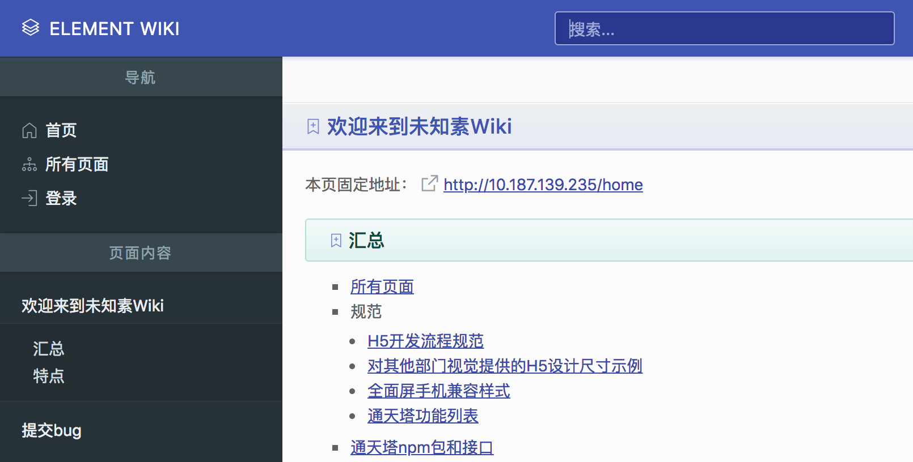

前端作品
课程
《H5游戏开发框架Phaser》
分成《基础篇上》、《基础篇下》、《动画篇》、《交互篇》、《物理引擎篇》。
H5游戏开发框架Phaser，根据个人开发经验，抽取出最核心常用的API、功能，帮助他人去除繁琐的API干扰，快速上手Phaser开发。
项目案例
平台开发类
-
Jelly共享工作平台
Jelly是Vue的一次最佳实践，其中涉及到Vue + VueRouter + Vux + Nginx + Koad + MangoDB等方面的技术。
-
Jelly微信小程序
Jelly微信小程序基于多终端开发框架Taro（React + Redux）搭建。
宣传互动类
-
京东宠物618-自从有了喵
描述收养猫咪的生活轶事，涉及大量资源、动画与操作，提升动画制作效率和加载性能是个中的难点。
-
正义联盟IP-英雄守卫战
训练样本，识别用户所画符号手势，触发攻击怪物，守卫星球。
-

小黄人IP-疯狂香蕉塔
使用P2物理引擎，模拟真实世界重力环境下的刚体碰撞，判断堆箱子失败条件和画面向上的逻辑。
-

京东双11-嘉年华
通过手势滑动和重力感应营造3D全景视差画面，并在3D场景中准确识别物体的点击拖动等操作事件。
-
2.14情人节-夺真爱打魔象
通过摇晃手机和声音判断，准确打脸魔象限定次数，拯救真爱。
-
王者出击综艺IP-偷塔赢红包
通过方向键控制英雄躲避敌人，偷取防御塔，赢取红包。
-
足球世界杯-疯狂足球赢手机
通过滑动屏幕控制足球发射的方向，射入龙门，可以选择不同的品牌进行换肤。
运营活动类
* 数据已下线，无法正常预览
-

京东另一面
React + Redux-saga实践，双十一11天11套皮肤和数据切换。
-
京东双11无界零售会场
自研Vue实践，通过用户当前经纬度，获取附近合作商家促销活动。
内部自研
京东运营活动vue开发框架
{kind=link}
未知素团队Wiki文档系统
代码随笔
- 《Css布局-居中与多列》
- 《Git简易使用笔记》
- 《Js基础拾遗》
- 《jQuery源码-html/text/css》
- 《jQuery源码-domManip/buildFragment》
- 《jQuery源码-Callbacks入门与原理》
- 《jQuery源码-Deferred》
- 《jQuery源码-核心功能函数揭秘》
- 《jQuery源码-css/addClass原理》
- 《jQuery源码-选择器》
- 《jQuery源码-事件绑定bind/delegate/on》
- 《Underscore源码-函数式编程思想》
- 《Underscore源码-整体结构和面向对象风格支持》
- 《Underscore源码-undefined的处理与iteratee设计》
- 《Underscore源码-rest参数和创建对象的方式》
- 《Underscore源码-map/reduce真值检测函数》
- 《Underscore源码-indexOf/lastIndexOf条件查询》